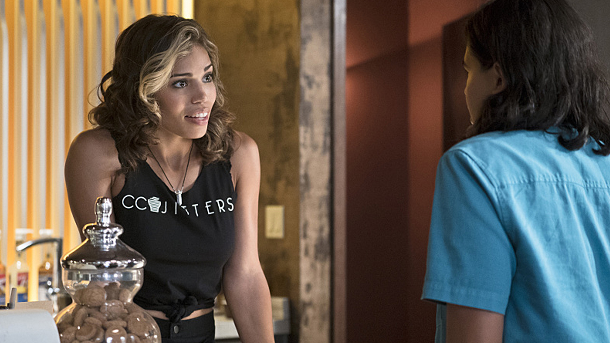

Flash S02|E05 The Darkness and the Light
Tonight’s new Flash episode had a fairly big hurdle to overcome right out of the gate. It’s not fair to tease viewers with a King Shark appearance one week and then not follow up on that appearance the following week. Despite that rather glaring omission, “The Darkness and the Light” was ultimately a satisfying experience. This week brought new players into the fold and added a little darkness into Barry Allen’s world while also taking care to offset that darkness with a little innocent romantic comedy
The appeal of King Shark’s brief cameo last week wasn’t even the character so much as the spectacle. Not since Season 1’s Gorilla Grodd episode has the series impressed that much with the quality of its special effects. The cost and time involved in rendering such a massive and outlandish villain are probably the exact reasons why he was absent this time. I’ll grant that that effort is probably better saved for when Grodd makes his next appearance.
Seeing another glimpse of Earth Two was definitely a great way to start things off this week. I’m impressed by how much effort is being put into differentiating the two worlds in terms of architecture and fashion design. There’s a sense from looking at the people inhabiting this space age-inspired, Art Deco world that Earth Two is a more innocent place. Or at least it was, until Zoom mucked everything up.
Amid all the Wells drama, this episode also delivered a new villain with a familiar face in the form of Doctor Light. The twist that Linda Park’s alternate universe self is a metahuman trapped in Zoom’s thrall was certainly an interesting one. Compared to some of this show’s less developed villains, she had a pretty clear set of motivations and desires. Her goal wasn’t villainy for villainy’s sake, but merely to usurp her counterpart’s life and hide from Zoom. Her showdown with Barry was an exciting way to cap off the episode, especially as Barry began testing his newly acquired Speed Mirage ability. You do have to question why Barry never thought to have Cisco whip up some sort of protective eye gear, though. Or heck, why not just wear Light’s helmet himself? At times it defies belief that a man who can run several times faster than the human brain can think would have so much trouble dealing with some of these villains.
Cisco has now been outed as a metahuman and even taken the name "Vibe." It'll be interesting to see if Cisco eventually veers more towards the direction of the source material in terms of using his powers offensively and wearing an actual costume. For now, the idea of Vibe as more of a supporting player gifted with an all-seeing eye seems to suit the show better. It's also really fun to see how Wells is factoring into Cisco's growth. The two had a very father/son relationship going in Season 1. And as prickly as this version of Wells is, we've already seen him show a knack for pushing Cisco like he does Barry and bringing out the best in him. This is a relationship I'm very keen to see evolve in the months ahead.

This episode also offered a proper debut for Kendra Saunders (played by Ciara Renée) following her quick cameo in the Season 1 finale. There was little indication that Kendra is anything other than a new love interest for Cisco here, but honestly, that’s enough right now. This episode got a lot of mileage out of the various romantic subplots. Barry and Patty’s first date was obviously the big focus. Their dinner together was cute. The whole “Barry trying to fake away his blindness” thing was a little sitcom-y, but at least Patty saw through the ruse and acknowledged how stupid-but-sweet it was. Cisco playing wingman was an added bonus for this scene. Luckily, as pitiful as he came across for most of the episode, his victory with Kendra offered him a much-deserved happy ending. There was also a bit more progress on the Caitlin/Jay front as the latter allowed his vulnerable side to show. Again, all of this material was great about keeping the episode on an even keel and preventing the darker elements from overwhelming everything. That sense of balance always been one of this show’s greatest strengths.
Next weeks episode preview: